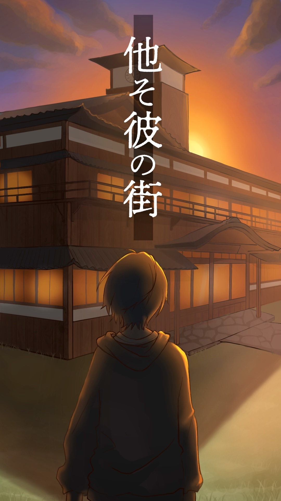

卓一覧

クトゥルフ神話TRPG第6版
クトゥルフ神話に登場する怪物と戦い、宇宙的恐怖から逃げるTRPG
ゲームセンターでの簡単な清掃
あなた方はお金が欲しい‼︎しかし碌な求人がない‼︎
そうだSNSで探そう‼︎
そんな時ある投稿を探索者は発見した。
PCについて
金に困っている者やニートなどですかね。STRが強いと得するかも？
本シナリオは闇バイトを助長するつもりはありません。
またKPが初めて完成させたCOCのオリシです
GM:箱崎敬祐

クトゥルフ神話TRPG 6版
「冬に貴方と星空を」
しばらく会っていなかった友達、七瀬 雪乃(ななせ ゆきの)から突如、探索者の元に手紙が届く。
【登場人物】
・七瀬 雪乃(ななせ ゆきの) 25歳
ひかえめな性格の女性。
幼い頃から病弱で、学生時代はあまり学校に来ていなかった。
探索者は雪乃の数少ない友達の1人である。
GM:御子柴 アイ
FAQ
Q.途中退室・途中参加はできますか？
A.できません、当日は通しでの参加をお願いします。
Q.スマートフォンでの参加は可能ですか？
A.可能です。Discordを用いた、通話環境とココフォリアの動作をご確認ください。
Q.ルールブックは必要ですか？
A.全ての卓でサマリーを配布するため、ルールブック未所持の方でも参加可能です。
Q.休憩時間はありますか？
A.卓ごとに時間が異なりますが、全ての卓で休憩時間を設けています。お気軽にGMにご相談ください。
Q.ボイスセッションですか？テキストセッションですか？
A.基本的にボイスセッションで行います。ですがプリプレイのみテキストでの対応も可能です。